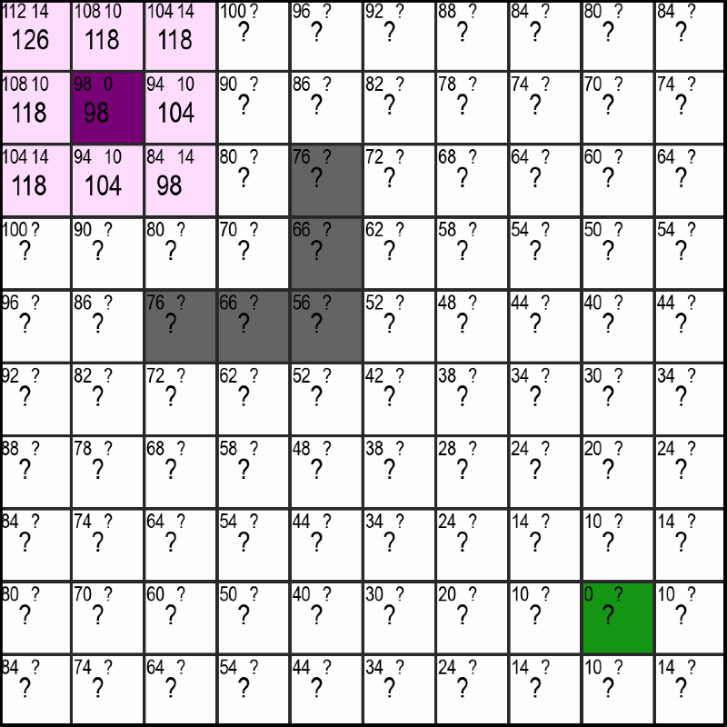

A*-Pathfinding
If you don't know the A*-Pathfinding Algorithm (pronounced "A-Star"), it's an Algorithm to find the shortest path between two points.
It has a multitude of applications, the most notible being of course car navigation systems or navigation from A to B in any network (with possibly weighted edges) and it works similar to Dijekstra's Algorithm↗.
Out of interest, I reprogrammed it myself in python and made a Youtube-Video↗ about it explaining the rough outlines of it.
The Algorithm
Here's a demo of how the algorithm is supposed to work. I'll explain what the numbers and all that mean in the following Section:

In the upper gif you can see the violet starting-point and the green end-point. When using the A*-Algorithm, it is necessary for us to know the location of the end-point and there can only ever be one end-point. We don't have those limitations with the Dijekstra-Algorithm, but on the flipside the A*-Algorithm is often much faster, especially when the distance between start and end becomes very large.
So about the numbers: In every square of the maze you can see three numbers. Two at the top and a larger one at the bottom which, as you might have already noticed, equates to sum of the upper two - nothing magical so far.
You can also notice that the upper left number is already precomputed for every square and decreases with the squares distance to the endpoint. And thats exaclty what this first number indicates. It is equal to the optimal distance from that square to the endpoint meaning the distance if there were no walls (the grey squares) in the way.
Calculating the Distance-Estimate to the Endpoint
I've set the distance from one square horizontally or vertically to the next equal to 10 and a diagonal has a distance of sqrt(2)*10 ≈ 14. If you now have the coordinates of the first square (x1, y1) and the coordinates of the end-square (x2, y2), you can get the shortest possible distance (the estimate) as follows:
def getDistanceEstimate(square, end):
difference_x = abs(end.x - square.x)
difference_y = abs(end.y - square.y)
diagonals = min(difference_x, difference_y)
straights = abs(difference_x - difference_y)
return diagonals * 14 + straights * 10
Here, we first calculate the absolute difference between the square and the endpoint (meaning the distance in x and in y, which is a non-negative number). After that, we can recall that moving along a diagonal and getting one square closer in the x- and y-direction is more efficient that going two seperate steps in the x- and then the y-direction (14 < 10 + 10), so we always want to move along a diagonal (as long as it makes sence and we can't get to the goal by only moving vertically or horizontally).
The number of diagonals we need to take is now simply the minimum of the difference in x- and in y-direction, as that's the number of steps before we are either in a horizontal or vertical line with the end and it doesn't make sence to move diagonally anymore.
We can then calculate the remaining number of straights we need to take by subtracting the number of diagonals we just determined from the bigger of the two differences (max(difference_x, difference_y) - diagonals) which simplifies to just taking the absolute distance of the two.
Finally, we can return the number of diagonals and straights multiplied with their corresponding distance-values of 14 and 10.
What about the other Number?
If you remember, there was a second number (or questionmark) at the top right of every square. Similar to the number at the top-left, this number represents the currently best available distance to the starting-point. Unlike the estimate for the distance to the end though, this number is not precomputed but is slowly discovered by the algorithm and updated when a shorter route is found. More on that in the following section.
Discovering new Squares
Bla bla bla lowest number first, update numbers...